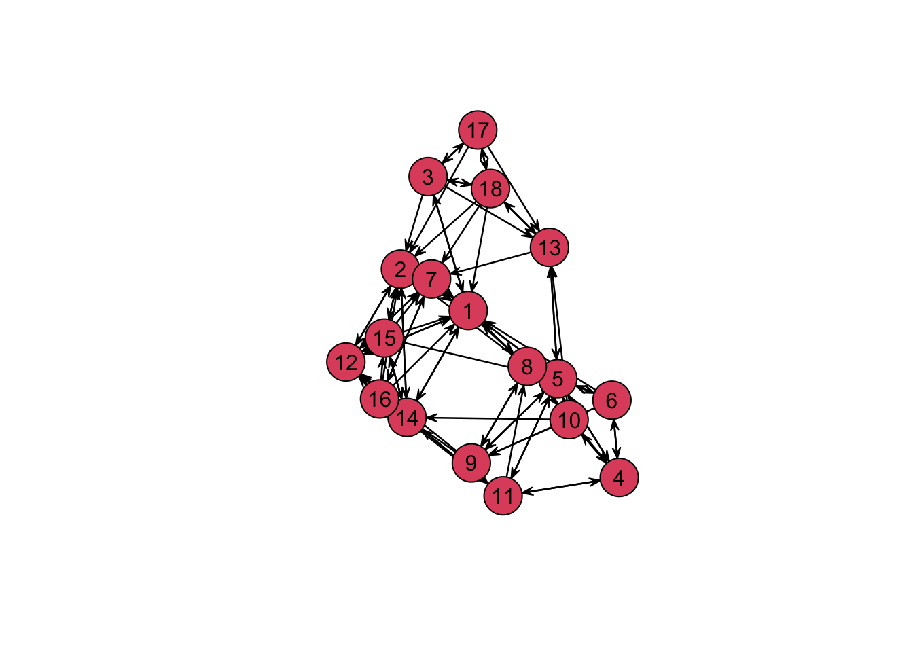

# パッケージの読み込み
pacman::p_load(statnet)
# データの読み込み
data(florentine)指数ランダムグラフモデル (ERGM)
本資料は，鈴木 (2017) の第７章を参考に，ERGMによるデータ分析をRで手を動かしながら学ぶことを主旨とする．
ネットワーク分析における統計的仮説検定
データ分析において，手元の観測値がたまたま得られただけなのか，母集団の性質を反映した有意味なものとして解釈して良いのかを判断する方法として，統計的仮説検定のフレームワークが広く使われている．よくなされる例は，「２群の母平均に差はない」，「２つの変数は無相関である」などの帰無仮説のもとで，手元の観測値を得る確率が十分に小さい場合に，帰無仮説を棄却し，対立仮説を採択する．帰無仮説が棄却されたとき，分析結果は統計的に有意であると判断される．
カイ二乗検定や \(t\) 検定では，既知の統計量の分布に基づいて有意性が判定される．しかし一般に，ネットワークの各指標の分布は未知であり，ノード数や密度などの条件によって指標の取りえる範囲や平均値などは変化する．そこで，帰無仮説に基づいて確率的にネットワークを生成するモンテカルロ・シミュレーションによって近似的な統計量の分布を求めて仮説検定を行うノンパラメトリック検定のアプローチが用いられる． このような検定法としてQAP検定とCUG検定がある．また，{statnet} パッケージおよび {RSiena} パッケージを用いたネットワークデータの多変量解析の方法も存在し，その一つが指数ランダムグラフモデル (Exponential Random Graph Model; ERGM) である．
指数ランダムグラフモデル
\(p_1\) モデル
有向ランダムグラフでは，ノード間に一定の確率で有向リンクが張られるが，ノード \(i\) と \(j\) の間にリンクが存在する確率 \(p_{ij}\) は次のロジスティックモデルで表すことができる．
\[ p_{ij} = \frac{\exp(\theta)}{1+\exp(\theta)} \] たとえば，\(\theta=0\) のときは \(p_{ij} = 1/2\) より，コイントスでノードの間にリンクを張っていくランダムグラフになる．
注意すべきは，あるノード間にリンクが張られるかどうかは，他のリンクの有無に依存せず，相互に独立であるということだ．したがって，たとえばノード \(i\) から \(j\) へのリンクがあって，かつノード \(j\) から \(k\) へのリンクが存在する確率は \(p_{ij}p_{jk}\) とそれぞれの確率の積で書ける．よって，どのノード間もリンク確率が一定であるとすれば，リンクの集合が得られる確率はリンク確率の累乗で表せるということになる．
一般に，ランダムグラフ \(Y\) において，ある特定のグラフ \(y\) が得られる確率は，次の式で表せる．
\[ \Pr(Y=y) = \frac{\exp\{\theta L(y)\}}{Z} \] ただし，\(L(y)\) はグラフ \(y\) に含まれるリンクの数であり，\(Z\) は規格化定数である．これは指数分布族 (exponential family) と呼ばれる確率分布の一種なので，この後に登場する派生モデルも含めてこのランダムグラフに関するモデルは，指数ランダムグラフモデル (exponential random graph model; ERGM) と呼ばれる．
{statnet} パッケージの導入
パッケージとデータの読み込み
Rでは {statnet} パッケージに含まれる {ergm} パッケージで ERGM による分析を行うことができる．まずは，サンプルデータを使って，{ergm} の基本的な記述法の例を示す．
サンプルデータは，ルネサンス期フィレンツェの名家の婚姻関係のネットワークである．ネットワーク・オブジェクトはデフォルトでflomarriageという変数に格納されており，flomarriageと入力するとネットワークの基本的な情報が出力される．
flomarriage Network attributes:
vertices = 16
directed = FALSE
hyper = FALSE
loops = FALSE
multiple = FALSE
bipartite = FALSE
total edges= 20
missing edges= 0
non-missing edges= 20
Vertex attribute names:
priorates totalties vertex.names wealth
No edge attributesこの出力から，ネットワークは16個のノードと20本のリンクからなる無向ネットワークであることがわかる．flomarriageのデータ型を確認すると
class(flomarriage)[1] "network"network型のオブジェクトには，ノードやリンクに属性を付与することができる．たとえば，flomarriageには一族ごとに家名（vertex.name）や富（wealth）に関する属性が与えられている．属性は次のようなコマンドで参照できる．
flomarriage %v% "vertex.names" [1] "Acciaiuoli" "Albizzi" "Barbadori" "Bischeri" "Castellani"
[6] "Ginori" "Guadagni" "Lamberteschi" "Medici" "Pazzi"
[11] "Peruzzi" "Pucci" "Ridolfi" "Salviati" "Strozzi"
[16] "Tornabuoni" flomarriage %v% "wealth" [1] 10 36 55 44 20 32 8 42 103 48 49 3 27 10 146 48ネットワークの可視化
これらの属性を用いて，ノードの大きさで富の大きさを確認できるように婚姻関係ネットワークを可視化する．
plot(
flomarriage,
vertex.cex = (flomarriage %v% "wealth") / 25,
displaylabels = TRUE)どうやら，Strozzi家が最も裕福な一家だったようである．
次数分布の確認
ネットワークの構造を大まかにつかむために，次数分布を確認する．
degree_distribution <- degree(flomarriage)
hist(degree_distribution,
breaks = seq(0, max(degree_distribution) + 1, by = 1),
main = "Degree Distribution of Florentine Marriage Network",
xlab = "Degree",
ylab = "Frequency",
col = "lightblue",
border = "black")ERGM実践
ERGMを使用するには，ergm()関数を用いる．入出力の仕方はglm()関数によるロジスティック回帰モデルに似ているが，説明変数に関しては多岐にわたるルールがある．詳しくは?ergm.termsによるヘルプを参照．
ランダムグラフモデル (Erdős–Rényi モデル)
まずは，シンプルなケースとしてリンク数 (edges) だけを条件としたランダムグラフモデルで分析を行う．
flomarriage_model0 <- ergm(flomarriage ~ edges)Starting maximum pseudolikelihood estimation (MPLE):Obtaining the responsible dyads.Evaluating the predictor and response matrix.Maximizing the pseudolikelihood.Finished MPLE.Evaluating log-likelihood at the estimate. summary(flomarriage_model0)Call:
ergm(formula = flomarriage ~ edges)
Maximum Likelihood Results:
Estimate Std. Error MCMC % z value Pr(>|z|)
edges -1.6094 0.2449 0 -6.571 <1e-04 ***
---
Signif. codes: 0 '***' 0.001 '**' 0.01 '*' 0.05 '.' 0.1 ' ' 1
Null Deviance: 166.4 on 120 degrees of freedom
Residual Deviance: 108.1 on 119 degrees of freedom
AIC: 110.1 BIC: 112.9 (Smaller is better. MC Std. Err. = 0)ここで計算された係数-1.6094は，リンク数が1増加したときの対数オッズであり，これを用いて婚姻関係ネットワーク内のあるリンクが存在する確率を計算すると，次のようになる．
\[ p = \frac{\exp(-1.6094)}{1+\exp(-1.6094)} \]
exp(coef(flomarriage_model0)) / (1 + exp(coef(flomarriage_model0))) edges
0.1666667 このリンク存在確率 \(p=0.1666667\) は，ノード数 \(N=16\)，リンク数 \(L=20\) の無向ネットワークの密度
\[ \frac{L}{\dbinom N 2} = \frac{20}{120} = 0.1666667 \] に一致する．
推移性を追加したモデル
説明変数に推移的な関係（三角形）の数 (triangle) を加えて分析を行う．
set.seed(321)
flomarriage_model1 <- ergm(flomarriage ~ edges + triangle)Starting maximum pseudolikelihood estimation (MPLE):Obtaining the responsible dyads.Evaluating the predictor and response matrix.Maximizing the pseudolikelihood.Finished MPLE.Starting Monte Carlo maximum likelihood estimation (MCMLE):Iteration 1 of at most 60:Warning: 'glpk' selected as the solver, but package 'Rglpk' is not available;
falling back to 'lpSolveAPI'. This should be fine unless the sample size and/or
the number of parameters is very big.Optimizing with step length 1.0000.The log-likelihood improved by 0.0015.Convergence test p-value: < 0.0001. Converged with 99% confidence.
Finished MCMLE.
Evaluating log-likelihood at the estimate. Fitting the dyad-independent submodel...
Bridging between the dyad-independent submodel and the full model...
Setting up bridge sampling...
Using 16 bridges: 1 2 3 4 5 6 7 8 9 10 11 12 13 14 15 16 .
Bridging finished.
This model was fit using MCMC. To examine model diagnostics and check
for degeneracy, use the mcmc.diagnostics() function.summary(flomarriage_model1)Call:
ergm(formula = flomarriage ~ edges + triangle)
Monte Carlo Maximum Likelihood Results:
Estimate Std. Error MCMC % z value Pr(>|z|)
edges -1.6900 0.3620 0 -4.668 <1e-04 ***
triangle 0.1901 0.5982 0 0.318 0.751
---
Signif. codes: 0 '***' 0.001 '**' 0.01 '*' 0.05 '.' 0.1 ' ' 1
Null Deviance: 166.4 on 120 degrees of freedom
Residual Deviance: 108.1 on 118 degrees of freedom
AIC: 112.1 BIC: 117.6 (Smaller is better. MC Std. Err. = 0.01102)ここで，ネットワーク内の二者間にリンクが存在するときの条件付き対数オッズは，\(\alpha\)をedgesの係数，\(\beta\)をtriangleの係数とすると
\[ \alpha\times\text{change in the number of ties}+\beta\times\text{change in number of triangles} \] である．
- 三角形を作らないリンクについては，条件付きオッズは \(\alpha\)
- 三角形を１つ作るリンクについては，\(\alpha + \beta\)
- 三角形を２つ作るリンクについては，\(\alpha + 2\beta\)
plogis()関数とcoef()関数を使えば，これら３つのケースに対応するリンク接続確率はそれぞれ，以下で与えられる．
plogis(coef(flomarriage_model1)[[1]] + (0:2) * coef(flomarriage_model1)[[2]])[1] 0.1557799 0.1824455 0.2125265また，\(p\) 値の推定結果を見ると，edgesの係数がゼロという帰無仮説は有意水準0.1%で棄却されるが，triangleの係数がゼロであるという帰無仮説は棄却されない．
ノードの属性を説明変数に入れたモデル
一族の富の大きさのようなノードの属性がリンクの存在確率に影響を与えるかを分析する．富の大きさの単位は連続値（千リラ）で与えられるので，説明変数の指定にはnodecov()を使う．nodecov()は連続値をとるノードの属性について，２つのノードの和をとった統計量を説明変数に組み込む関数である．
flomarriage_model2 <- ergm(flomarriage ~ edges + nodecov("wealth"))Starting maximum pseudolikelihood estimation (MPLE):Obtaining the responsible dyads.Evaluating the predictor and response matrix.Maximizing the pseudolikelihood.Finished MPLE.Evaluating log-likelihood at the estimate. summary(flomarriage_model2)Call:
ergm(formula = flomarriage ~ edges + nodecov("wealth"))
Maximum Likelihood Results:
Estimate Std. Error MCMC % z value Pr(>|z|)
edges -2.594929 0.536056 0 -4.841 <1e-04 ***
nodecov.wealth 0.010546 0.004674 0 2.256 0.0241 *
---
Signif. codes: 0 '***' 0.001 '**' 0.01 '*' 0.05 '.' 0.1 ' ' 1
Null Deviance: 166.4 on 120 degrees of freedom
Residual Deviance: 103.1 on 118 degrees of freedom
AIC: 107.1 BIC: 112.7 (Smaller is better. MC Std. Err. = 0)nodecov.wealthの推定結果から，富の大きさが有意な正の効果を持つことがわかった．つまり，両家の富の和が大きいほど婚姻関係は結ばれやすいということである．
モデルの評価
モデルの評価は出力されるAICやBICで行う．Smaller is better.とあるように，これらの指標が小さいほど良いモデルと考えられる．
有向ネットワークの分析
有向ネットワークの例として，サンプソンの修道院の好意ネットワークとして知られるデータを用いた分析を行う．
data(sampson)
samplike Network attributes:
vertices = 18
directed = TRUE
hyper = FALSE
loops = FALSE
multiple = FALSE
total edges= 88
missing edges= 0
non-missing edges= 88
Vertex attribute names:
cloisterville group vertex.names
Edge attribute names:
nominations ノード数が18，リンク数が88の有向ネットワークであることがわかる．次にネットワークを描画する．
plot(
samplike,
vertex.cex = 5,
arrowhead.cex = 1.5,
displaylabels = TRUE,
label.pos = 5,
label = 1:18
)
次数分布の確認
出次数と入次数の分布を確認する．
# samplikeの出次数と入次数を計算
out_degree_distribution <- degree(samplike, cmode = "outdegree")
in_degree_distribution <- degree(samplike, cmode = "indegree")
# 出次数分布をヒストグラムとして描画
par(mfrow = c(1, 2)) # グラフを2行1列に配置
hist(out_degree_distribution,
breaks = seq(0, max(out_degree_distribution) + 1, by = 1),
main = "",
xlab = "Out-Degree",
ylab = "Frequency",
col = "lightblue",
border = "black")
# 入次数分布をヒストグラムとして描画
hist(in_degree_distribution,
breaks = seq(0, max(in_degree_distribution) + 1, by = 1),
main = "",
xlab = "In-Degree",
ylab = "Frequency",
col = "lightgreen",
border = "black")生産性（ハブ性）と牽引性（オーソリティ性）の効果を含むモデルA
まず，\(p_1\) モデルにおける生産性 (sender) と牽引性 (receiver) の効果を含むモデルで分析を行う．
samplike_model1 <- ergm(samplike ~ edges + sender + receiver)Starting maximum pseudolikelihood estimation (MPLE):Obtaining the responsible dyads.Evaluating the predictor and response matrix.Maximizing the pseudolikelihood.Finished MPLE.Evaluating log-likelihood at the estimate. summary(samplike_model1)Call:
ergm(formula = samplike ~ edges + sender + receiver)
Maximum Likelihood Results:
Estimate Std. Error MCMC % z value Pr(>|z|)
edges 1.1154 0.7558 0 1.476 0.14001
sender2 -0.3175 0.7780 0 -0.408 0.68319
sender3 -0.4545 0.7823 0 -0.581 0.56124
sender4 -0.7633 0.8136 0 -0.938 0.34816
sender5 -0.3557 0.7820 0 -0.455 0.64920
sender6 -0.8156 0.8103 0 -1.007 0.31415
sender7 -0.3954 0.7839 0 -0.504 0.61394
sender8 -0.1036 0.7654 0 -0.135 0.89232
sender9 -0.7818 0.8128 0 -0.962 0.33616
sender10 -0.1668 0.7624 0 -0.219 0.82686
sender11 -0.4545 0.7823 0 -0.581 0.56124
sender12 -0.7231 0.8133 0 -0.889 0.37395
sender13 -1.1720 0.8627 0 -1.358 0.17433
sender14 -0.3954 0.7839 0 -0.504 0.61394
sender15 -0.1453 0.7641 0 -0.190 0.84917
sender16 -0.4545 0.7823 0 -0.581 0.56124
sender17 -0.8156 0.8103 0 -1.007 0.31415
sender18 -0.1453 0.7641 0 -0.190 0.84917
receiver2 -0.2721 0.7164 0 -0.380 0.70409
receiver3 -2.2164 0.8229 0 -2.693 0.00707 **
receiver4 -1.5578 0.7449 0 -2.091 0.03650 *
receiver5 -0.7603 0.7119 0 -1.068 0.28555
receiver6 -2.7143 0.9160 0 -2.963 0.00305 **
receiver7 -1.2622 0.7272 0 -1.736 0.08261 .
receiver8 -1.5182 0.7444 0 -2.040 0.04139 *
receiver9 -1.8669 0.7738 0 -2.413 0.01583 *
receiver10 -2.6772 0.9159 0 -2.923 0.00347 **
receiver11 -2.2164 0.8229 0 -2.693 0.00707 **
receiver12 -1.0265 0.7169 0 -1.432 0.15220
receiver13 -1.5763 0.7443 0 -2.118 0.03419 *
receiver14 -1.2622 0.7272 0 -1.736 0.08261 .
receiver15 -2.1961 0.8225 0 -2.670 0.00758 **
receiver16 -2.2164 0.8229 0 -2.693 0.00707 **
receiver17 -2.7143 0.9160 0 -2.963 0.00305 **
receiver18 -2.1961 0.8225 0 -2.670 0.00758 **
---
Signif. codes: 0 '***' 0.001 '**' 0.01 '*' 0.05 '.' 0.1 ' ' 1
Null Deviance: 424.2 on 306 degrees of freedom
Residual Deviance: 327.4 on 271 degrees of freedom
AIC: 397.4 BIC: 527.8 (Smaller is better. MC Std. Err. = 0)各ノードの出次数と入次数に基づいて，その効果が推定されているが，ノード1については推定値が示されていない．これは説明変数の間に線形の関係が生じるのを避けるためである．
牽引性と相互性を含むモデルB
次に，牽引性 (receiver) と相互性 (mutual) の効果を推定する．ergm()の出力は長いのでここでは省略している．
samplike_model2 <- ergm(samplike ~ edges + receiver + mutual)summary(samplike_model2)Call:
ergm(formula = samplike ~ edges + receiver + mutual)
Monte Carlo Maximum Likelihood Results:
Estimate Std. Error MCMC % z value Pr(>|z|)
edges -0.1995 0.5342 0 -0.373 0.70878
receiver2 -0.2229 0.7251 0 -0.307 0.75850
receiver3 -2.2994 0.7973 0 -2.884 0.00393 **
receiver4 -1.5843 0.7512 0 -2.109 0.03496 *
receiver5 -0.7831 0.7041 0 -1.112 0.26609
receiver6 -2.7433 0.9259 0 -2.963 0.00305 **
receiver7 -1.2789 0.7388 0 -1.731 0.08343 .
receiver8 -1.5563 0.7743 0 -2.010 0.04443 *
receiver9 -1.9062 0.7890 0 -2.416 0.01570 *
receiver10 -2.7668 0.9362 0 -2.955 0.00312 **
receiver11 -2.2307 0.8583 0 -2.599 0.00935 **
receiver12 -1.0130 0.7293 0 -1.389 0.16486
receiver13 -1.5748 0.7678 0 -2.051 0.04025 *
receiver14 -1.2508 0.7554 0 -1.656 0.09779 .
receiver15 -2.3246 0.8326 0 -2.792 0.00524 **
receiver16 -2.2661 0.8482 0 -2.672 0.00755 **
receiver17 -2.7714 0.9296 0 -2.981 0.00287 **
receiver18 -2.2783 0.8163 0 -2.791 0.00526 **
mutual 2.4180 0.4219 0 5.731 < 1e-04 ***
---
Signif. codes: 0 '***' 0.001 '**' 0.01 '*' 0.05 '.' 0.1 ' ' 1
Null Deviance: 424.2 on 306 degrees of freedom
Residual Deviance: 295.6 on 287 degrees of freedom
AIC: 333.6 BIC: 404.3 (Smaller is better. MC Std. Err. = 0.3721)推定結果より，相互性 (mutual) の効果は有意であり，AICやBICを見てもモデルAよりも当てはまりが良くなっている．
Goodness of Fit
有向ネットワークに対して作ったモデルAとモデルBは，モデルBの方がデータへの当てはまりが良いことがわかった．しかし，MCMCシミュレーションによる変化が生じていないかを確認するために，モデルによって生成されるネットワークがオリジナルのネットワークの統計量を再現できているかを確認した方が良い．モデルの goodness of fit を評価するにはgof()関数を使う．gof()関数は指定したモデルからシミュレーションによって多数生成されたネットワークの統計量の分布を求め，観測されたネットワークのと統計量と比較する関数である．
gof_samplike_model2 <- gof(samplike_model2)
par(mfrow = c(3,2), mar = c(4, 4, 3, 1))
# プロットのレイアウトを2行2列に設定し，各プロットのマージン（上下左右）をそれぞれ4, 4, 3, 1に設定
plot(gof_samplike_model2)上図のように，シミュレーションによって生成されたネットワーク群の各種統計量の分布が箱ひげ図で出力され，実線で表された実際のネットワーク統計量と比較することができる．ここでは，入次数，出次数，edge-wise shared partners，頂点間最短距離の分布は，実際のネットワークから無視できないほど大きな違いは生じていない．
ホモフィリーの分析
次に，ホモフィリー (homophily)，標語的には「似たもの同士はつながりやすい」と表現される現象を分析する1．使用するデータは，{ergm} パッケージに含まれる高校生の友人関係ネットワーク faux.mesa.high である．
data(faux.mesa.high)
(fmh <- faux.mesa.high) Network attributes:
vertices = 205
directed = FALSE
hyper = FALSE
loops = FALSE
multiple = FALSE
bipartite = FALSE
total edges= 203
missing edges= 0
non-missing edges= 203
Vertex attribute names:
Grade Race Sex
No edge attributes表示の通り，205個のノードと203のリンクからなる無向ネットワークである．リンクは相互に友人として認めた関係を表す．また，ノードの属性として学年，人種，性別が付与されている．まずは学年と性別に注目し，それぞれの分布をみてみる．
table(fmh %v% "Grade")
7 8 9 10 11 12
62 40 42 25 24 12 table(fmh %v% "Sex")
F M
99 106 Grade 7に属する生徒の数が最も多く，女子と男子はだいたい半々であることがわかる．では，これらの生徒たちは，どの程度同じ学年や性別の相手と友人関係にあるのか．リンク単位の属性の組合せの集計量（e.g., 男子同士のつながりの数）は，mixingmatrix()関数で調べることができる．
mixingmatrix(fmh, "Grade") 7 8 9 10 11 12
7 75 0 0 1 1 1
8 0 33 2 4 2 1
9 0 2 23 7 6 4
10 1 4 7 9 1 5
11 1 2 6 1 17 5
12 1 1 4 5 5 6Note: Marginal totals can be misleading for undirected mixing matrices.mixingmatrix(fmh, "Sex") F M
F 82 71
M 71 50Note: Marginal totals can be misleading for undirected mixing matrices.下の行列を見ると，女子同士の組合せが82組，男子同士の組合せが50組，男女の組合せが71組であることが確認でき，合計すると \(82+50+71=203\) でネットワークのリンク数の \(203\) に一致している．これらの行列の対角成分が大きいほど，ホモフィリーがあると考えられる．
いずれの行列も対角成分に集中しているので，どうやらホモフィリーがありそうだが，ネットワークの見た目にも反映されているだろうか．学年ごとに色分けし，性別をノードの形で区別したネットワークを描画して確認する．
plot(
fmh,
vertex.col = "Grade",
vertex.side = ((fmh %v% "Sex" == "F") * 17 + 3)
)
legend(
"topright", # 位置
legend = 7:12, # 凡例
fill = 7:12, # それぞれの凡例に色を割り当て
title = "Grade"
)
legend(
"bottomright",
legend = c("Female", "Male"),
pch = 1:2, # 凡例にノードのシンボルを追加
title = "Sex"
)
Grade 7やGrade 8の生徒は，同学年で友達になりやすい傾向がありそうに見える．しかし，ある学年では友達ができやすく，ある学年では友達ができにくいといった，学年ごとの効果が外生的に存在する場合は，mixingmatrixでわかる組合せの分布だけからホモフィリーの効果があるとは判断できない．そこで，外生的に与えられたノードの属性の効果を統制したホモフィリーの効果を ERGM によって分析する．
カテゴリカルな属性の効果（モデル１）
学年や性別のようなカテゴリカルな属性の効果はnodefactor()で指定できる．nodefactor()項は，リンクの両端の一方あるいは両方に注目する属性をもつノードが何個あるかをモデルに入れる2．ここでも，説明変数同士の線形関係を避けるために，デフォルトでは１番目のカテゴリの係数は推定されない．
fmh_model1 <- ergm(fmh ~ edges + nodefactor("Grade") + nodefactor("Sex"))Starting maximum pseudolikelihood estimation (MPLE):Obtaining the responsible dyads.Evaluating the predictor and response matrix.Maximizing the pseudolikelihood.Finished MPLE.Evaluating log-likelihood at the estimate. summary(fmh_model1)Call:
ergm(formula = fmh ~ edges + nodefactor("Grade") + nodefactor("Sex"))
Maximum Likelihood Results:
Estimate Std. Error MCMC % z value Pr(>|z|)
edges -3.89026 0.16381 0 -23.749 < 1e-04 ***
nodefactor.Grade.8 -0.21007 0.14344 0 -1.465 0.143040
nodefactor.Grade.9 -0.45949 0.14922 0 -3.079 0.002076 **
nodefactor.Grade.10 -0.48698 0.18721 0 -2.601 0.009290 **
nodefactor.Grade.11 -0.13923 0.16623 0 -0.838 0.402251
nodefactor.Grade.12 -0.06374 0.20750 0 -0.307 0.758720
nodefactor.Sex.M -0.36589 0.10270 0 -3.563 0.000367 ***
---
Signif. codes: 0 '***' 0.001 '**' 0.01 '*' 0.05 '.' 0.1 ' ' 1
Null Deviance: 28987 on 20910 degrees of freedom
Residual Deviance: 2256 on 20903 degrees of freedom
AIC: 2270 BIC: 2326 (Smaller is better. MC Std. Err. = 0)推定結果から，9年生，10年生，男子であることに有意な負の効果があることがわかる．これらの効果を統制しながらホモフィリーの効果をモデルに追加して分析する．
ホモフィリーの効果（モデル２）
ホモフィリーの効果はnodematch()関数で表現し，その引数にdiff = TRUEと指定するとカテゴリ別の一致度からそれぞれのホモフィリーの効果が推定される．diff = TRUEはどのカテゴリでホモフィリーが現れているかを知りたいときに用いる．なお，デフォルトではdiff = FALSEであり，すべてのカテゴリの一致度からその変数に関するホモフィリーの効果が推定される．
fmh_model2 <- ergm(fmh ~ edges
+ nodefactor("Grade")
+ nodefactor("Sex")
+ nodematch("Grade", diff = TRUE)
+ nodematch("Sex"))Starting maximum pseudolikelihood estimation (MPLE):Obtaining the responsible dyads.Evaluating the predictor and response matrix.Maximizing the pseudolikelihood.Finished MPLE.Evaluating log-likelihood at the estimate. summary(fmh_model2)Call:
ergm(formula = fmh ~ edges + nodefactor("Grade") + nodefactor("Sex") +
nodematch("Grade", diff = TRUE) + nodematch("Sex"))
Maximum Likelihood Results:
Estimate Std. Error MCMC % z value Pr(>|z|)
edges -10.73012 1.17357 0 -9.143 < 1e-04 ***
nodefactor.Grade.8 1.68305 0.68536 0 2.456 0.014061 *
nodefactor.Grade.9 2.51736 0.64925 0 3.877 0.000106 ***
nodefactor.Grade.10 3.00706 0.65041 0 4.623 < 1e-04 ***
nodefactor.Grade.11 2.79117 0.65592 0 4.255 < 1e-04 ***
nodefactor.Grade.12 3.51836 0.65440 0 5.376 < 1e-04 ***
nodefactor.Sex.M -0.31070 0.09458 0 -3.285 0.001020 **
nodematch.Grade.7 7.42853 1.17284 0 6.334 < 1e-04 ***
nodematch.Grade.8 4.26894 0.71436 0 5.976 < 1e-04 ***
nodematch.Grade.9 2.02090 0.55283 0 3.656 0.000257 ***
nodematch.Grade.10 1.25479 0.62117 0 2.020 0.043378 *
nodematch.Grade.11 2.43461 0.61074 0 3.986 < 1e-04 ***
nodematch.Grade.12 1.29069 0.69445 0 1.859 0.063089 .
nodematch.Sex 0.61146 0.15121 0 4.044 < 1e-04 ***
---
Signif. codes: 0 '***' 0.001 '**' 0.01 '*' 0.05 '.' 0.1 ' ' 1
Null Deviance: 28987 on 20910 degrees of freedom
Residual Deviance: 1839 on 20896 degrees of freedom
AIC: 1867 BIC: 1978 (Smaller is better. MC Std. Err. = 0)nodematchの推定結果から12年生以外のすべての学年でホモフィリーの効果が有意に存在することがわかる．また，ホモフィリーを統制する（モデルに組み込む）ことで，先のモデル１と比べて学年の効果の現れ方や有意性に変化が現れている．モデル１では学年が上がると友達を持ちにくくなる印象を受けるが，モデル２では逆に学年の効果は高学年ほど大きくなる傾向にある．この差異が生じるのは，７年生は他の学年よりも人数が多く，ホモフィリーの効果も大きいので友達関係を作りやすくなっていたからだと考えられる．
Goodness of Fit
モデル１とモデル２の goodness of fit を確認する．
gof_fmh_model1 <- gof(fmh_model1)
par(mfrow = c(2,2))
plot(gof_fmh_model1, main = "GOF diagnostics of model 1")gof_fmh_model2 <- gof(fmh_model2)
par(mfrow = c(2,2))
plot(gof_fmh_model2, main = "GOF diagnostics of model 2")リンクの履歴効果の分析
ERGM ではノードの属性だけでなく，リンクに関する属性も説明変数にすることができる．Harris (2014) の分析例に倣って，{sna} パッケージに含まれている Coleman の高校生ネットワークを使って，先行する時点の友達関係の有無が後の時点のリンクの有無に影響するかを分析する．Coleman の高校生ネットワークは，73人の男子高校生の友達関係ネットワークで，1957年秋と1958年春の２時点でよく付き合いのある相手を挙げてもらった方向性のあるデータである．よって，秋の友達関係とその翌年の春の友達関係という２時点のネットワークデータを含んでいる．配列型データとして格納されており，その次元は2, 73, 73である．
pacman::p_load(igraph)
data(coleman)
coord1 <- gplot(coleman, g = 1) # ネットワーク(g = 1)のプロットの座標をcoord1に保存par(mfrow = c(1,2))
gplot(coleman, g = 1, coord = coord1, main = "Fall, 1957")
gplot(coleman, g = 2, coord = coord1, main = "Spring, 1958")秋の友達関係ネットワークg = 1においてリンクがあったときに，春のネットワークg = 2においてもリンクのある割合を求める．
fall <- coleman[1, , ] # 秋のネットワークの隣接行列
spring <- coleman[2, , ] # 春のネットワークの隣接行列
sum(spring * fall) / sum(fall)[1] 0.5761317次に，ERGM を用いて秋の友達関係ネットワークにリンクがあったときに春のネットワークでもリンクのある確率を求めてみる．説明変数にリンクの属性を指定するには，edgecov()を使用する．ここでは，秋のネットワークの隣接行列fallを属性値として与える．
coleman_model1 <- ergm(spring ~ edges + edgecov(fall))Starting maximum pseudolikelihood estimation (MPLE):Obtaining the responsible dyads.Evaluating the predictor and response matrix.Maximizing the pseudolikelihood.Finished MPLE.Evaluating log-likelihood at the estimate. summary(coleman_model1)Call:
ergm(formula = spring ~ edges + edgecov(fall))
Maximum Likelihood Results:
Estimate Std. Error MCMC % z value Pr(>|z|)
edges -3.68276 0.09129 0 -40.34 <1e-04 ***
edgecov.fall 3.98968 0.15870 0 25.14 <1e-04 ***
---
Signif. codes: 0 '***' 0.001 '**' 0.01 '*' 0.05 '.' 0.1 ' ' 1
Null Deviance: 7286 on 5256 degrees of freedom
Residual Deviance: 1486 on 5254 degrees of freedom
AIC: 1490 BIC: 1503 (Smaller is better. MC Std. Err. = 0)推定で得られたedgesとedgecovの係数をそれぞれ \(\alpha,\beta\) とすると，秋の友達関係ネットワークでリンクがあったとき春のネットワークでも関係のある確率は，
\[ \frac{\exp(\alpha + \beta)}{1 + \exp(\alpha + \beta)} \] で計算できる．
exp(sum(coleman_model1$coefficients)) / (1 + exp(sum(coleman_model1$coefficients)))[1] 0.5761317単にこの条件付き確率を求めるだけなら，先ほどの隣接行列を使った方法でも良いが，ERGM を使うメリットは，相互性のような構造的指標やノードの属性などの他の変数の効果を統制しながら（説明変数に加えながら）多変量解析として分析を進めることができる点にある．
参考文献
- 鈴木努, 2017, 『Rで学ぶデータサイエンス8 ネットワーク分析 第2版』共立出版.
- Jenine K. Harris. An Introduction to Exponential Random Graph Modeling. Sage, 2014.